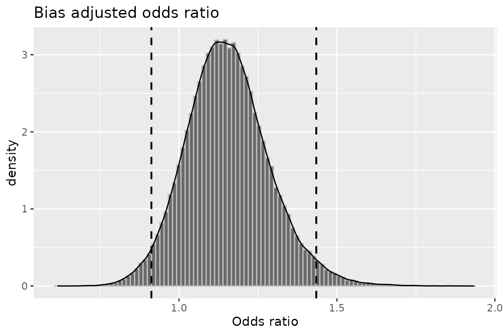
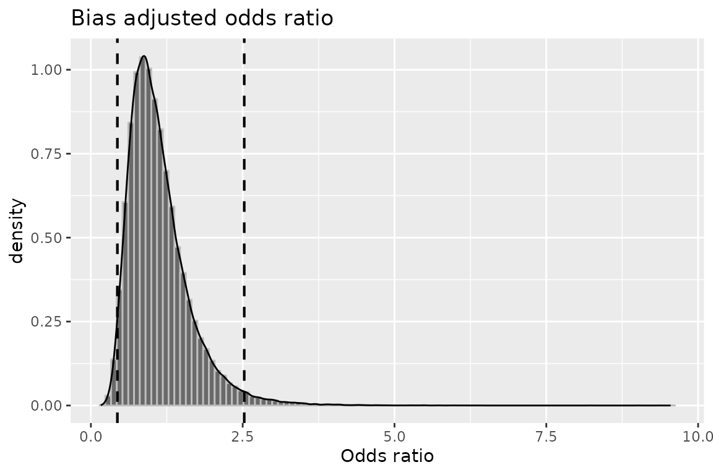
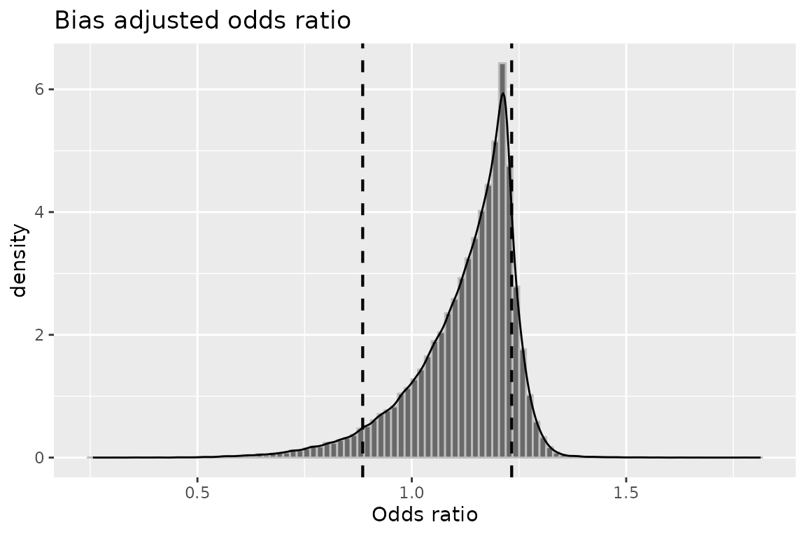
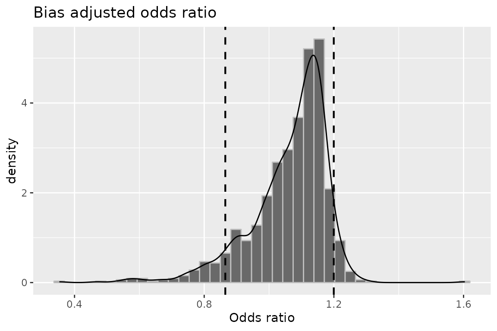
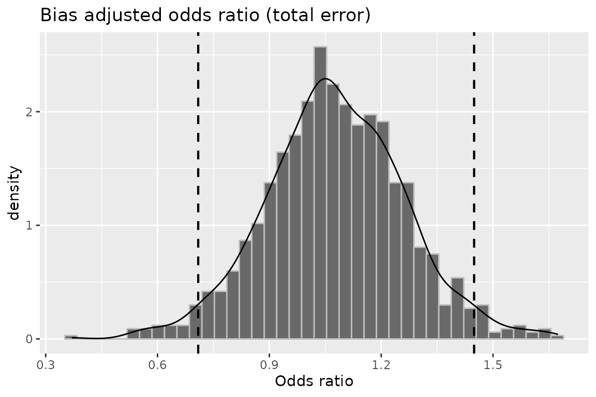

Multiple Bias Modeling
Denis Haine
2023-05-18
Source:vignettes/c_multiple_bias.Rmd
c_multiple_bias.RmdEpidemiologic studies can suffer from more than one bias. Bias
functions in episensr can be applied sequentially to
quantify bias resulting from multiple biases.
Following the example in Lash et al., we can use the study by Chien et al.. It is a case-control study looking at the association between antidepressant use and the occurrence of breast cancer. The observed OR was 1.2 [0.9–1.6].
chien <- matrix(c(118, 832, 103, 884),
dimnames = list(c("BC+", "BC-"), c("AD+", "AD-")),
nrow = 2, byrow = TRUE)| AD+ | AD- | |
|---|---|---|
| BC+ | 118 | 832 |
| BC- | 103 | 884 |
Records on medication use differed between participants, from pharmacy records and self-reported use, leading to misclassification:
## Loading required package: ggplot2
chien %>%
misclassification(., type = "exposure", bias_parms = c(.56, .58, .99, .97))## --Observed data--
## Outcome: BC+
## Comparing: AD+ vs. AD-
##
## AD+ AD-
## BC+ 118 832
## BC- 103 884
##
## 2.5% 97.5%
## Observed Relative Risk: 1.1012443 0.9646019 1.2572431
## Observed Odds Ratio: 1.2172330 0.9192874 1.6117443
## ---
## 2.5% 97.5%
## Misclassification Bias Corrected Relative Risk: 1.272939
## Misclassification Bias Corrected Odds Ratio: 1.676452 1.150577 2.442679Controls and cases also enrolled into the study at different rates.
We can combine the misclassification bias with a selection bias thanks
to the function multiple.bias:
chien %>%
misclassification(., type = "exposure", bias_parms = c(.56, .58, .99, .97)) %>%
multiple.bias(., bias_function = "selection", bias_parms = c(.73, .61, .82, .76))##
## Multiple bias analysis
## ---
##
## Selection Bias Corrected Relative Risk: 1.192461
## Selection Bias Corrected Odds Ratio: 1.512206The association between antidepressant use and breast cancer was adjusted for various confounders (race/ethnicity, income, etc.). None of these confounders were found to change the association by more than 10%. However, for illustration, we can add the effect of a potential confounder (e.g. physical activity):
chien %>%
misclassification(., type = "exposure", bias_parms = c(.56, .58, .99, .97)) %>%
multiple.bias(., bias_function = "selection",
bias_parms = c(.73, .61, .82, .76)) %>%
multiple.bias(., bias_function = "confounders",
type = "OR", bias_parms = c(.92, .3, .44))##
## Multiple bias analysis
## ---
## OR_conf
## Standardized Morbidity Ratio: 1.494938 1.011609
## Mantel-Haenszel: 1.494938 1.011609We can do the same in a probabilistic framework:
- Misclassification bias
set.seed(123)
mod1 <- chien %>%
probsens(., type = "exposure", reps = 100000,
seca.parms = list("trapezoidal", c(.45, .5, .6, .65)),
seexp.parms = list("trapezoidal", c(.4, .48, .58, .63)),
spca.parms = list("trapezoidal", c(.95, .97, .99, 1)),
spexp.parms = list("trapezoidal", c(.96, .98, .99, 1)),
corr.se = .8, corr.sp = .8)
mod1## --Observed data--
## Outcome: BC+
## Comparing: AD+ vs. AD-
##
## AD+ AD-
## BC+ 118 832
## BC- 103 884
##
## 2.5% 97.5%
## Observed Relative Risk: 1.1012443 0.9646019 1.2572431
## Observed Odds Ratio: 1.2172330 0.9192874 1.6117443
## ---
## Median 2.5th percentile
## Relative Risk -- systematic error: 1.0712296 0.9538245
## Odds Ratio -- systematic error: 1.1480025 0.9125458
## Relative Risk -- systematic and random error: 1.0704809 0.8993218
## Odds Ratio -- systematic and random error: 1.1477524 0.8001310
## 97.5th percentile
## Relative Risk -- systematic error: 1.1895215
## Odds Ratio -- systematic error: 1.4344889
## Relative Risk -- systematic and random error: 1.2667664
## Odds Ratio -- systematic and random error: 1.6374497
plot(mod1, "or")
- Selection bias
set.seed(123)
mod2 <- chien %>%
probsens.sel(., reps = 100000,
case.exp = list("beta", c(8.08, 24.25)),
case.nexp = list("trapezoidal", c(.75, .85, .95, 1)),
ncase.exp = list("beta", c(12.6, 50.4)),
ncase.nexp = list("trapezoidal", c(0.7, 0.8, 0.9, 1)))
mod2## --Observed data--
## Outcome: BC+
## Comparing: AD+ vs. AD-
##
## AD+ AD-
## BC+ 118 832
## BC- 103 884
##
## 2.5% 97.5%
## Observed Odds Ratio: 1.2172330 0.9192874 1.6117443
## ---
## Median 2.5th percentile
## Odds Ratio -- systematic error: 1.0232545 0.4594409
## Odds Ratio -- systematic and random error: 1.0225083 0.4365052
## 97.5th percentile
## Odds Ratio -- systematic error: 2.4217989
## Odds Ratio -- systematic and random error: 2.5253069
plot(mod2, "or")
- Confounding
set.seed(123)
mod3 <- chien %>%
probsens.conf(., reps = 100000,
prev.exp = list("beta", c(24.9, 58.1)),
prev.nexp = list("beta", c(42.9, 54.6)),
risk = list("trapezoidal", c(.2, .58, 1.01, 1.24)))
mod3## --Observed data--
## Outcome: BC+
## Comparing: AD+ vs. AD-
##
## AD+ AD-
## BC+ 118 832
## BC- 103 884
##
## 2.5% 97.5%
## Observed Relative Risk: 1.1012443 0.9646019 1.2572431
## Observed Odds Ratio: 1.2172330 0.9192874 1.6117443
## ---
## Median 2.5th percentile
## RR (SMR) -- systematic error: 1.0693786 0.9292659
## RR (SMR) -- systematic and random error: 1.0595660 0.8854500
## OR (SMR) -- systematic error: 1.1559562 0.8145649
## OR (SMR) -- systematic and random error: 1.1302762 0.7492557
## 97.5th percentile
## RR (SMR) -- systematic error: 1.1259703
## RR (SMR) -- systematic and random error: 1.2329113
## OR (SMR) -- systematic error: 1.2774908
## OR (SMR) -- systematic and random error: 1.5561690
plot(mod3, "or")
- Misclassification then selection
set.seed(123)
chien %>%
probsens(., type = "exposure", reps = 100000,
seca.parms = list("trapezoidal", c(.45, .5, .6, .65)),
seexp.parms = list("trapezoidal", c(.4, .48, .58, .63)),
spca.parms = list("trapezoidal", c(.95, .97, .99, 1)),
spexp.parms = list("trapezoidal", c(.96, .98, .99, 1)),
corr.se = .8, corr.sp = .8) %>%
multiple.bias(., bias_function = "probsens.sel",
case.exp = list("beta", c(8.08, 24.25)),
case.nexp = list("trapezoidal", c(.75, .85, .95, 1)),
ncase.exp = list("beta", c(12.6, 50.4)),
ncase.nexp = list("trapezoidal", c(0.7, 0.8, 0.9, 1)))##
## Multiple bias analysis
## ---
## Median 2.5th percentile
## Odds Ratio -- systematic error: 0.9796433 0.4763065
## Odds Ratio -- systematic and random error: 0.9844851 0.4568008
## 97.5th percentile
## Odds Ratio -- systematic error: 2.1640513
## Odds Ratio -- systematic and random error: 2.2700749- Misclassification, selection, and confounding
set.seed(123)
mod6 <- chien %>%
probsens(., type = "exposure", reps = 100000,
seca.parms = list("trapezoidal", c(.45, .5, .6, .65)),
seexp.parms = list("trapezoidal", c(.4, .48, .58, .63)),
spca.parms = list("trapezoidal", c(.95, .97, .99, 1)),
spexp.parms = list("trapezoidal", c(.96, .98, .99, 1)),
corr.se = .8, corr.sp = .8) %>%
multiple.bias(., bias_function = "probsens.sel",
case.exp = list("beta", c(8.08, 24.25)),
case.nexp = list("trapezoidal", c(.75, .85, .95, 1)),
ncase.exp = list("beta", c(12.6, 50.4)),
ncase.nexp = list("trapezoidal", c(0.7, 0.8, 0.9, 1))) %>%
multiple.bias(., bias_function = "probsens.conf",
prev.exp = list("beta", c(24.9, 58.1)),
prev.nexp = list("beta", c(42.9, 54.6)),
risk = list("trapezoidal", c(.2, .58, 1.01, 1.24)))
mod6##
## Multiple bias analysis
## ---
## Median 2.5th percentile
## RR (SMR) -- systematic error: 1.0442703 0.9122304
## RR (SMR) -- systematic and random error: 1.0352565 0.8650944
## OR (SMR) -- systematic error: 1.0944021 0.7603153
## OR (SMR) -- systematic and random error: 1.0723193 0.7091321
## 97.5th percentile
## RR (SMR) -- systematic error: 1.1014633
## RR (SMR) -- systematic and random error: 1.1996913
## OR (SMR) -- systematic error: 1.2164556
## OR (SMR) -- systematic and random error: 1.4492568
plot(mod6, "or")
plot(mod6, "or_tot")